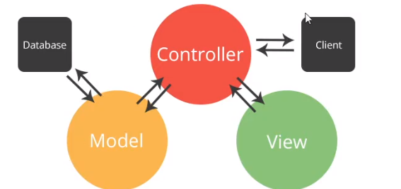
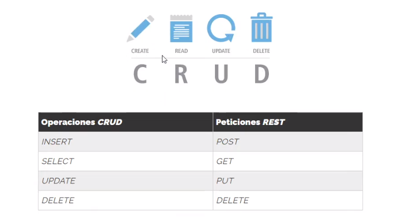
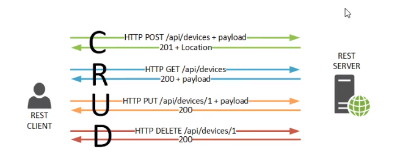
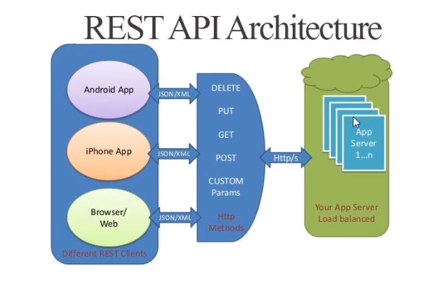

Introduccion API REST - 111
API REST API REST¿Qué es REST?
Entendiendo REST. El estilo de Arquitectura.*****
Roy Fielding
Roy Fielding: Transferencia de estado representativo (REST)
JSONPlaceholder
json-server
Insomnia
Postman
   
API REST: JSON Server - API falsa local - 112
API REST json-serverHabilitar ejecución de archivos .ps1 en Windows
Getting started:
Install JSON Server
> npm install -g json-server
Create a db.json file with some data
> json-server --watch assets/db.json
API REST: Consumo de datos con cliente REST - 113
PostmanInsomnia
Levantar el server >json-server -w -p 5555 assets/db.json
API REST: CRUD - 114
crud_ajax.htmlcrud_fetch.html
crud_axios.html